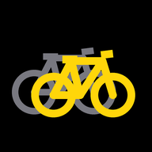

Ghost Vélo
⚙︎
● Enregistrer un parcours
Importer un GPX
Parcours démo
Mes fantômes
ENREGISTREMENT
0:00
VITESSE
0.0
km/h
DISTANCE
0.00
km
■ Arrêter
Recherche du GPS…
—
Le chrono démarre tout seul quand tu passes la ligne de départ.
C'EST PARTI
0 s
0 m
⚠︎ Hors parcours — rejoins la trace
← derrière
fantôme ±100 m
devant →
fantôme
toi
VITESSE
0.0
km/h
TEMPS
0:00
DISTANCE
0.00
/ 0.00 km
■ Arrêter
Départ maintenant
Arrivée !
0:00
Ce temps devient le fantôme
Garder aussi comme nouveau parcours
Retour à l'accueil